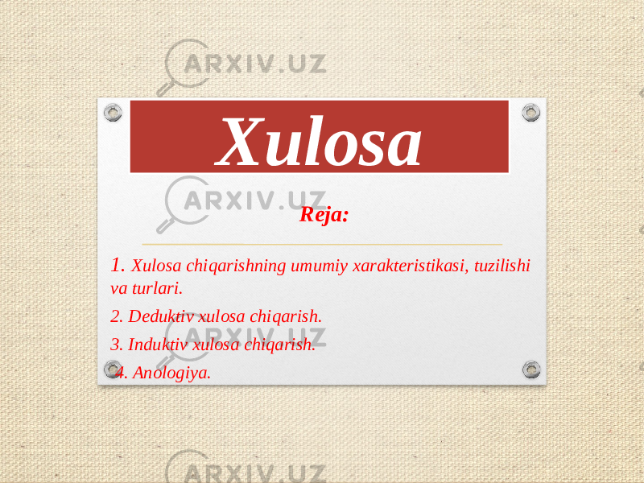
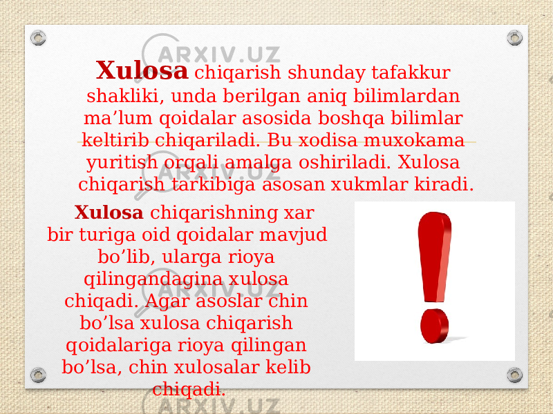

Bosh sahifa
Slaydlar
Falsafa
Xulosa
Xulosa
Yuklangan vaqt:
23.09.2019
Ko'chirishlar soni:
429
Hajmi:
2.1 MB
Ko'chirib olish shartlari

O'xshashlar
Mantiqning asosiy qonunlari
Mantiqning asosiy qonunlari
Ijodiy jarayonni ifoda etish shakllari va metodlari
Mantiq fanining predmeti va vazifalari
Argumentlash nazariyasining mantiqiy asoslari
![Xulosa chiqarishning turlari ko’p bo’lib, biz nisbatan ko’proq uchraydigan xillarini o’rganamiz. Ularni turlarga ajratganda, dastlab asoslarning sonlarini xisobga olamiz. Agar xulosa bir asosdan chiqarilgan bo’lsa, bevosita xulosa chiqarish , ikki yoki undan ko’proq asoslardan chiqarilgan bo’lsa, bavosita xulosa chiqarish deymiz. To’g’ri xulosa chiqarish jarayonining o’zi xar doim biror vosita yordamida amalga oshiriladi. Mantiqda bir xukmdan boshqasi keltirilib chiqarilgani uchun bevosita, to’g’ridan to’g’ri xulosa chiqarish deyiladi . Bevosita xulosa chiqarish mantiqiy kvadrat orqali va xukmlarning shaklini o’zgartirish orqali bo’ladi. Mantiqiy kvadrat orqali xulosa chiqarish bevosita xulosa chiqarishning shunday turiki, unda moddiy jixatdan bir xil xukmlarning munosabatini aniqlash orqali yangi bilim olinadi.](./Xulosa_files/page-3.png)
![Deduktiv xulosa chiqarish « Deduktsiya » lotin tilidan olingan so’z bo’lib, umumiydan keltirib chiqarish degan ma’noni anglatadi. Deduktiv xulosa chiqarish yoki deduktsiyada asos sifatida chinligi ilgaridan ma’lum bo’lgan fikrlar olinadi. Ular qonunlar, qoidalar, ta’riflar, aksiomalar tarzida ifodalangan bo’lishi mumkin. Asoslarda biror xususiyat bir turkum predmetlarning xammasiga xos ekanligi yoki xos emasligi ko’rsatiladi. Xulosaga ega shu xususiyat o’sha sinfga kiruvchi bir yoki bir necha predmetga xos ekanligi yoki xos emasligi haqida fikr bayon qilinadi. Deduktiv xulosa chiqarishning ko’p uchraydigan xili sillogistik xulosa chiqarish, boshqacha aytganda, sillogizmlardir. Sillogizm – qo’shib xisoblash degan ma’noni anglatadi.](./Xulosa_files/page-4.png)
![Asoslari va xulosasi oddiy qat’iy xukmlardan iborat bo’lgani uchun oddiy qat’iy sillogizm deyiladi. Oddiy qat’iy sillogizm uchta xukmdan iborat bo’lib birinchisi katta asos, ikkinchisi kichik asos, uchinchi kelib chiqadigan xukm xulosa deyiladi. Oddiy qat’iy sillogizm uchta termindan iborat bo’ladi: katta termin – sillogizmning predikati, Kichik termin – sillogizmning sub’ekti va O’rta termin – kata va kichik terminni bog’lab turadigan termindir. Katta termin birinchi xukmning tarkibiga kirgani uchun u katta asos deyiladi. Kichik termin ikkinchi xukmning tarkibiga kirgani uchun u kichik asos deyiladi.](data:image/svg+xml;charset=UTF-8,%3Csvg%20width%3D%221%22%20height%3D%221%22%20xmlns%3D%22http%3A%2F%2Fwww.w3.org%2F2000%2Fsvg%22%20viewBox%3D%220%200%20%25%7Bw%7D%20%25%7Bh%7D%22%20preserveAspectRatio%3D%22none%22%3E%3Crect%20width%3D%22100%25%22%20height%3D%22100%25%22%20style%3D%22fill%3A%23FFF%3B%22%3E%3C%2Frect%3E%3C%2Fsvg%3E)